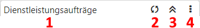

Innerhalb des Power Reports werden alle Arbeiten über die Kopfleisten vorgenommen. Hierbei wird zwischen der allgemeinen Kopfleiste und einer Widget-Kopfleiste unterschieden.
Power Report-Kopfleiste
In der Kopfleiste stehen die allgemeinen Steuerungselemente des Power Reports zur Verfügung.
Ø Vorlage (1)
Mit Hilfe einer Auswahlliste kann die Vorlage ausgewählt werden.
Hinweis
Handelt es sich um eine Vorlage mit "{}" (z.B. "Gegenüberstellung {a}"), so handelt es sich um eine öffentliche Vorlage. Solche Vorlagen können nur durch Volladministratoren oder durch Benutzer mit dem Teiladministrationsrecht "Datenadministration" gespeichert werden.
Ø neue Vorlage (2)
Mit Hilfe des Buttons "neue Vorlage" kann eine neue Vorlage erzeugt werden. Die Angabe des Namens findet hierbei über den automatisch eingeblendeten Bereich Vorlagen Verwaltung statt.
Ø Vorlage speichern (3)
Durch Anwahl des Buttons "Vorlage speichern" wird der aktuelle Aufbau des Power Reports in der Vorlage gespeichert. Die Speicherung bzw. Zuordnung erfolgt hierbei immer für die Ausgangsdatenquelle, d.h. jene Datenquelle, aus deren Kontext heraus der Power Report gestartet wurde.
Ø neues Widget (4)
Mit Hilfe des Buttons "neues Widget" können neue Widgets in den Power Report eingefügt werden.
Ø Filter (5)
An dieser Stelle wird anzeigt, ob aktuell ein Quickfilter im Power Report wird. Des Weiteren kann der Filter durch Anwahl des Buttons entfernt werden.
ü - kein Filter
Im Power Report wird
aktuell kein Quickfilter angewendet.
ü - aktiver Filter
Im Power Report wird
auf zumindest einer Datenquelle ein Quickfilter angewendet. Durch Anwahl des
Buttons wird dieser entfernt.
Ø Hauptmenü (6)
Durch Anwahl des Buttons "Hauptmenü" öffnet sich das Hauptmenü.
Widget-Kopfleiste

In der Kopfleiste stehen die Informationen und Steuerungselemente des Widgets zur Verfügung.
Ø Beschreibung (1)
Im linken Bereich der Kopfleiste wird die Bezeichnung des Widgets angezeigt, welche in den Einstellungen editiert werden kann. Die Information in Klammern gibt die Datenquelle an.
Ø Aktualisierung (2)
Handelt es sich um ein Live-Kalender-Widget (siehe auch WinLine Kalender), so kann durch Anwahl dieses Buttons eine Aktualisierung des Kalenders, bezogen auf den gewählten Zeitraum, erfolgen.
Ø Widget schließen / öffnen (3)
Durch Anwahl dieses Elements kann die Widget-Darstellung geschlossen bzw. wieder geöffnet werden.
Ø Widget-Menü (4)
Durch Anwahl des Buttons "Einstellungen" öffnet sich ein Auswahlmenü mit folgenden Einträgen:
ü 
Es wird das Einstellungsfenster des
Widgets geöffnet.
ü 
Mit Hilfe der Funktion "Widget Filter"
wird der Widget Filter geöffnet. In
diesem kann die Datenquelle nach frei definierbaren Kriterien eingeschränkt
werden.
ü
Durch Anwahl des Eintrag "Kopieren" wird
das Widget, mit all seinen Einstellungen, dupliziert und im linken oberen
Bereich des Power Reports dargestellt.
ü
Durch Anwahl dieses Buttons wird der
Inhalt der Widgets auf Vollbild maximiert bzw. wieder minimiert.
ü
Mit Hilfe dieser Buttons kann man bei
einem Widget des Typs Kanban alle
Gruppen schließen bzw. wieder öffnen.
ü 
Der Inhalt des Widgets kann durch Anwahl
dieses Eintrags als png-Datei abgespeichert werden. Die Grafik wird hierbei ohne
Hintergrund (d.h. transparent) ausgegeben.
ü
Mit Hilfe dieses Eintrags wird der
Inhalt einer Tabelle, einer Datentabelle, eines Olaps (ohne ggfs. hinterlegte Formatierung), eines Kalenders oder eines Kanbans an Microsoft Excel
übergeben.
ü 
Durch Anwahl dieses Eintags wird der
Inhalt einer Datentabelle als
PDF-Datei ausgegeben.
ü 
Bei Widgets des Typs Olap steht die Rohdatenansicht zur Verfügung. Ist
diese aktiviert, so wird bei Mausklick auf eine Zahl kein Quickfilter ausgelöst,
sondern die genaue Zusammensetzung des Werts angezeigt.
ü
Sobald eine Ansicht für einen Olap definiert wurde, steht bei diesem
die Ansichten Verwaltung zur
Verfügung. Über diese können Ansichten editiert oder gelöscht werden.
ü
Mit Hilfe des Eintrags "Tabellen
Selektion" werden die aktuell markierten Zeilen der Tabelle als Filterkriterium
gesetzt. Diese Funktion steht somit nur bei dem Widget Tabelle zur Verfügung.
ü
Durch Anwahl des Eintrags "Entfernen"
wird das Widget aus dem Power Report entfernt.
ü 
Durch Anwahl von "Refresh" wird der
Inhalt des Widgets aktualisiert, d.h. das Widget wird ohne ggfs. wirkende Filter
dargestellt. Diese Funktion steht nur bei dem Widget Geo Map zur Verfügung.